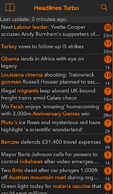
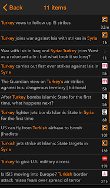
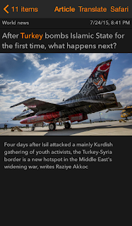
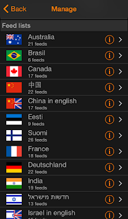
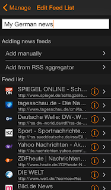
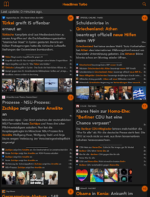

Headlines Turbo was a news reader app that downloaded news articles from multiple sources, grouped them by content similarity, and displayed them to the user in a compact view. The aim was to provide fast access to relevant news topics, in which the relevancy was determined by the popularity of the topic across multiple sources. Secondary objective was to bring multiple viewpoints of politically biased topics in the same view, which was useful especially when reading the U.S. newsphere.
  
A clustering algorithm was developed that was transparent to language, i.e. the algorithm did not use pre-programmed stop words or stemming that were commonly used in other algorithms. This made the scaling of the app to other languages practically effortless.
 
The app was written in Objective-C, with the algorithm being prototyped in Python. Especially challenging was to optimize the algorithm performance such that it would run smoothly on a mobile device. If I recall correctly, the total clustering time was brought from initial 1-2 minutes to less than a second by using CPU caching and C++ in the critical parts.

The app was available in App Store in 2013 - 2017 but removed due to not being a commercial success. Also, updating to later iOS versions would have required substantial amount of time and effort.